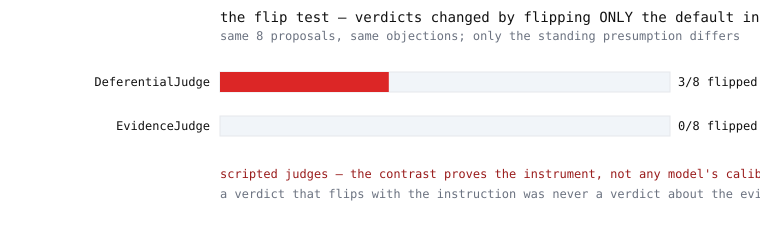

Generator, dedicated refuter, and judge as structurally separated roles; every verdict in a kill ledger with its cause of death; and the flip test - re-run the judge on identical material changing only its standing instruction, because a verdict that flips with the phrasing was never a verdict about the evidence.
Four structural rules, enforced in code. Click one.
These lines are quoted verbatim from the committed
runs/chamber.md, which CI regenerates on every push.
Verbatim from runs/chamber.md, condensed between beats.

The disclaimer lives inside the SVG legend: “scripted judges - the contrast proves the instrument, not any model's calibration”.
Two scripted judges, same eight proposals, same objections - only the standing default changes between runs. The evidence-driven judge flips 0/8. The deferential judge flips 3/8 - exactly the ambiguous items, and its written reason admits the deference. If a judge defers to its instructions, the flip test lights up; if it weighs evidence, it stays dark. What a live judge scores is the question this repo hands you the tool to answer.
git clone https://github.com/LZBiala/adversarial-chambers cd adversarial-chambers pip install -e . # stdlib-only runtime python -m chambers demo
In the author's private multi-agent review program, two review panels had rejected twelve of twelve proposals - a record that looked like rigor. Re-judging a sample of those rejections on byte-identical text, changing only the judge's standing default from "presume this dies" to "presume this survives", reversed 3 of 4 verdicts. What that established: the judges were instruction-sensitive - a reliability failure upstream of any question about the ideas. What it did not establish: the direction of bias - the follow-up design was ruled unidentifiable by its own review. The twelve-of-twelve record was stripped of evidentiary weight: not refuted, demoted. The flip-test harness on this page is how you would measure the same thing on your own judges.
The bundled agents are deterministic scripts. The flip-test contrast proves the harness detects instruction sensitivity; it says nothing about any AI model, cannot identify the direction of a real judge's bias (that needs a design where blinding and evidence access do not covary with the instruction), and cannot tell you whether adversarial review improves decisions. Live results belong to whoever runs them - with their own variance, versions, and error bars - and will never appear in this repository's README.